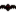
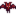

Template:Infobox monster
Jump to navigation
Jump to search
Description
This template is used to display an infobox for monster pages.
Use
Do not use this on your user page. It is reserved for content pages. This template can be used by entering the following onto a relevant page.
{{Infobox monster
|name = Name of monster, defaults to {{PAGENAME}}
|portrait = Image of monster with file extension
|location = Monster location
|levels = Location level
|killable = Yes/no
|hp = Health amount
|dmg = Damage to done to player
|def = Defense amount
|spd = Movement Speed
|exp = Experience given on defeat
|variations = List variations. Optional
|drops = List drops
}}
Sample
| Bats | |
 | |
| Information | |
| Spawns In: | The Mines |
| Floors: | 31-120 |
| Killable: | yes |
| Base HP: |  24, 36,  80 |
| Base Damage: | 06, 07, 15 |
| Base Def: | 1 |
| Speed: | 3 |
| XP: | 03, 07, 15 |
| Variations: | Bat, Frost Bat, Lava Bat |
| Drops: | If reached bottom of Mines: |
{{Infobox monster
|name = Bats
|portrait = Bat_Anim.gif
|location = The Mines
|levels = 31-120
|killable = yes
|hp = [[File:Bat.png|16px|link=]] 24, [[File:Frost Bat.png|16px|link=]] 36, [[File:Lava Bat.png|16px|link=]] 80
|dmg = [[File:Bat.png|16px|link=]] 06, [[File:Frost Bat.png|16px|link=]] 07, [[File:Lava Bat.png|16px|link=]] 15
|def = 1
|spd = 3
|exp = [[File:Bat.png|16px|link=]] 03, [[File:Frost Bat.png|16px|link=]] 07, [[File:Lava Bat.png|16px|link=]] 15
|variations = Bat, Frost Bat, Lava Bat
|drops = {{name|Bat Wing|75%}}
}}